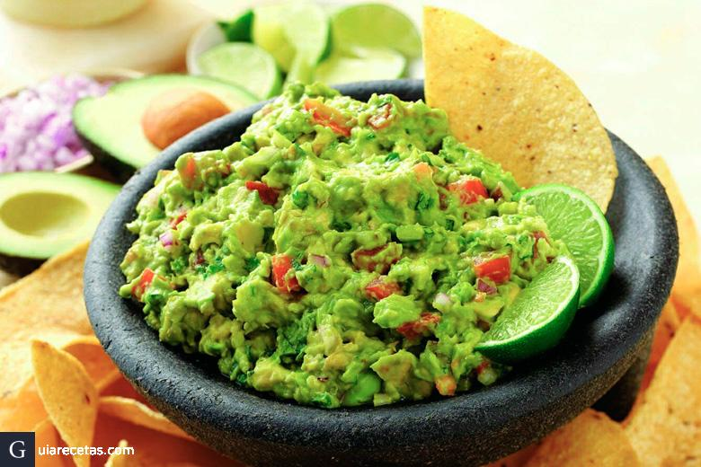
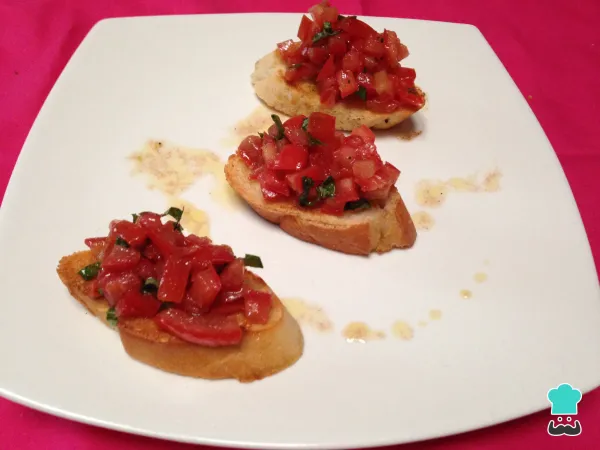

Recetas de Entradas
Guacamole Casero

Ingredientes
| Ingrediente | Cantidad |
|---|
| Aguacates | 2 unidades |
| Jitomate | 1 unidad |
| Cebolla | 1/4 de unidad |
| Cilantro | Al gusto |
| Jugo de limón | 1 cucharada |
| Sal | Al gusto |
Preparación
- Pelar y triturar los aguacates en un tazón.
- Picar finamente el jitomate, la cebolla y el cilantro.
- Mezclar con los aguacates y añadir el jugo de limón.
- Salpimentar al gusto y servir con totopos.
Bruschetta de Tomate

Ingredientes
| Ingrediente | Cantidad |
|---|
| Pan baguette | 1 unidad |
| Jitomates cherry | 200g |
| Ajo | 1 diente |
| Albahaca | Al gusto |
| Aceite de oliva | 2 cucharadas |
| Sal y pimienta | Al gusto |
Preparación
- Cortar la baguette en rebanadas y tostarlas.
- Picar los jitomates y mezclarlos con ajo picado, albahaca y aceite de oliva.
- Salpimentar al gusto.
- Colocar la mezcla sobre las rebanadas de pan y servir.
Palitos de Queso
Ingredientes
| Ingrediente | Cantidad |
|---|
| Queso mozzarella | 200g |
| Pan molido | 1 taza |
| Huevo | 1 unidad |
| Harina | 1/2 taza |
| Aceite para freír | 250ml |
| Sal y pimienta | Al gusto |
Preparación
- Cortar el queso en tiras gruesas.
- Pasarlas por harina, huevo batido y pan molido.
- Freír en aceite caliente hasta que estén dorados.
- Escurrir sobre papel absorbente y servir con salsa de tomate.